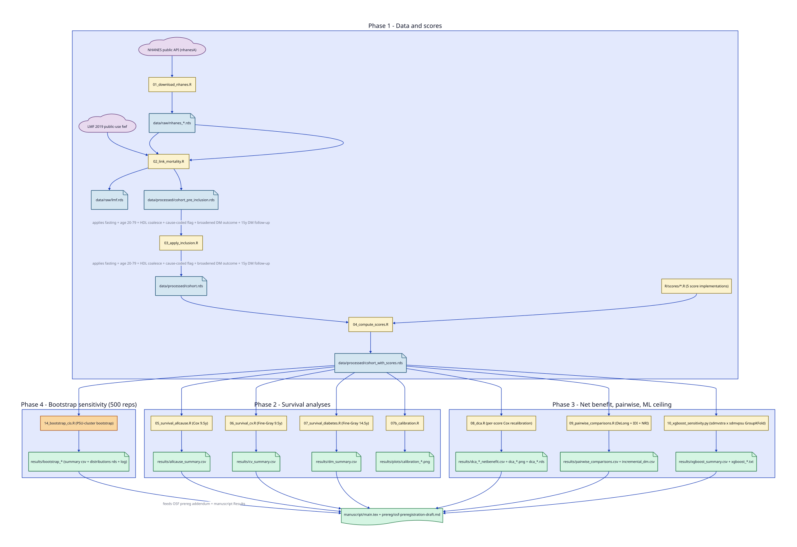
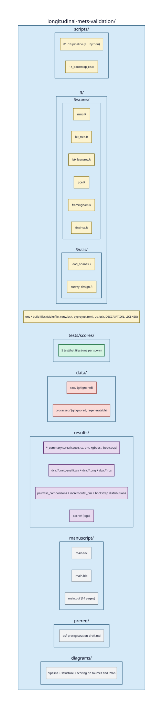

External longitudinal validation of metabolic syndrome risk scores for cardiovascular, diabetes, and all-cause mortality in the US NHANES Linked Mortality File
Observational cohort study with a written protocol, NHANES 1999 to 2018 linked to the NHANES Linked Mortality File 2019 release.
Headline finding
- For cardiovascular and all-cause mortality, the clinical risk equations (Framingham 2008, PCE) clearly dominate the metabolic-syndrome-derived scores. The XGBoost ceiling on the MetS inputs alone does not close the gap.
- For diabetes-related mortality, RMRS and FINDRISC are statistically indistinguishable on point discrimination (primary IPCW time-dependent delta-AUC -0.020, 95% bootstrap CI -0.068 to +0.028; FINDRISC numerically higher at 0.770 vs 0.752), and RMRS gives modest incremental value when stacked on FINDRISC (IDI 0.0042, continuous NRI 0.139, both CIs exclude zero). The FINDRISC comparator now uses NHANES-derived family history, prediabetes, and physical-activity items rather than placeholders.
- The B9 decision tree, reconstructed in full (22 leaves) with its native Korean feature scaling, is competitive with RMRS rather than dominated by it; RMRS exceeds it only modestly (primary IPCW delta-AUC +0.014 all-cause, +0.029 cardiovascular, +0.060 diabetes-related). The XGBoost ceiling on the five MetS components alone exceeds both (diabetes-related 0.772, rising to 0.828 with age and sex), so the MetS signal is not the constraint. A CART refit on a held-out NHANES split recovers RMRS-level discrimination, placing the B9 gap on the transportability of the Korean-calibrated splits rather than on the tree method itself.
Study at a glance
Cohort. Pooled NHANES 1999 to 2018 fasting subsample, adults 20 to 79 years, with non-missing values on the five metabolic syndrome components and eligible mortality linkage. N = 17,031 (all-cause); cardiovascular and diabetes-related analyses use the 13,836 participants from the 1999 to 2014 cycles with full leading-cause coding.
Outcomes. All-cause mortality (10-year cap, 806 deaths, full cohort), cardiovascular mortality (10-year cap, 173 deaths), and diabetes-related mortality under a broadened definition combining underlying-cause diabetes mellitus, underlying-cause nephritis, and the LMF DIABETES contributing-cause flag (15-year cap, 77 deaths). Cardiovascular and diabetes counts are within the cause-coded subcohort.
Scores compared. RMRS (continuous metabolic-syndrome risk score via triangular areal similarity); B9 (decision-tree formulation of the same five components); ACC/AHA Pooled Cohort Equations (primary cardiovascular baseline); Framingham 2008 (secondary cardiovascular baseline); FINDRISC (type 2 diabetes screening baseline).
Methods. Survey-weighted Fine-Gray competing-risks (cardiovascular, diabetes) and Cox proportional hazards (all-cause). Time-dependent IPCW AUC at off-cap horizons. Competing-risks decision curve analysis with Fine-Gray cumulative-incidence recalibration and Aalen-Johansen net benefit. Paired IPCW time-dependent delta-AUC (DeLong on the horizon-cap binary outcome as a secondary check) with 500-rep within-stratum PSU-cluster bootstrap CIs. Continuous NRI and IDI. XGBoost ML ceiling with PSU x stratum grouped cross-validation.
Diagrams



scripts/, R/scores/, and R/utils/. Outputs land in results/. The study protocol and analysis plan are in prereg/ and the manuscript LaTeX source plus rendered PDF in manuscript/.Headline numbers
Time-dependent AUC at primary horizons (500-rep PSU-cluster bootstrap 95% CIs)
| Score | Outcome | Horizon | AUC (95% CI) |
|---|---|---|---|
| Framingham 2008 | All-cause | 9.5y | 0.810 (0.795, 0.825) |
| PCE | All-cause | 9.5y | 0.758 (0.736, 0.778) |
| FINDRISC | All-cause | 9.5y | 0.672 (0.651, 0.695) |
| RMRS | All-cause | 9.5y | 0.600 (0.578, 0.622) |
| B9 tree | All-cause | 9.5y | 0.525 (0.505, 0.542) |
| Framingham 2008 | Cardiovascular | 9.5y | 0.858 (0.831, 0.884) |
| PCE | Cardiovascular | 9.5y | 0.810 (0.772, 0.841) |
| RMRS | Cardiovascular | 9.5y | 0.660 (0.625, 0.693) |
| B9 tree | Cardiovascular | 9.5y | 0.560 (0.519, 0.593) |
| FINDRISC | Diabetes-related | 14.5y | 0.770 (0.705, 0.826) |
| RMRS | Diabetes-related | 14.5y | 0.752 (0.696, 0.804) |
| B9 tree | Diabetes-related | 14.5y | 0.582 (0.532, 0.631) |
Protocol pairwise delta-AUC contrasts (primary IPCW time-dependent metric)
| Contrast | Outcome (horizon) | Delta-AUC (95% CI) |
|---|---|---|
| RMRS vs FINDRISC (H3 non-inferiority) | Diabetes-related (14.5y) | -0.020 (-0.068, +0.028) |
| RMRS vs B9 | All-cause (9.5y) | +0.014 (+0.000, +0.029) |
| RMRS vs B9 | Cardiovascular (9.5y) | +0.029 (-0.003, +0.064) |
| RMRS vs B9 | Diabetes-related (14.5y) | +0.060 (+0.015, +0.110) |
| PCE vs Framingham (H2) | Cardiovascular (9.5y) | +0.009 (-0.001, +0.021) |
XGBoost ML ceiling: metabolic syndrome components, with and without age and sex
| Outcome (horizon) | MetS components only | + age, sex | Top score |
|---|---|---|---|
| All-cause (9.5y) | 0.698 | 0.813 | Framingham 0.810 |
| Cardiovascular (9.5y) | 0.746 | 0.817 | Framingham 0.858 |
| Diabetes-related (14.5y) | 0.772 | 0.828 | FINDRISC 0.770, RMRS 0.752 |
Code, draft, and protocol
- Source repository github.com/jayhemnani9910/longitudinal-mets-validation
- Manuscript PDF manuscript/main.pdf
- Study protocol prereg/osf-preregistration-draft.md
- Registration retrospective protocol in repository; not a prospective registration
- Result CSVs results/ (allcause, cv, dm, pairwise, dca, xgboost, bootstrap)
- Pipeline source scripts/01 to 15
Source papers
The two metabolic syndrome risk scoring methods evaluated here come from the Shin, Oh, and Shim research line.
- Shin HJ, Oh J, Shim SS. A robust metabolic syndrome risk score using triangular areal similarity. PeerJ Computer Science, 2024. (RMRS, score B8.)
- Shin HJ, Oh J, Shim SS. Machine learning predictive model for metabolic syndrome prevention. PLoS ONE, 2023. (B9 decision tree.)
The clinical risk equation baselines come from the standard literature: Goff et al. (ACC/AHA 2014) for PCE; D'Agostino et al. (Circulation 2008) for Framingham; Lindstrom and Tuomilehto (Diabetes Care 2003) for FINDRISC.